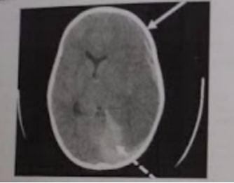
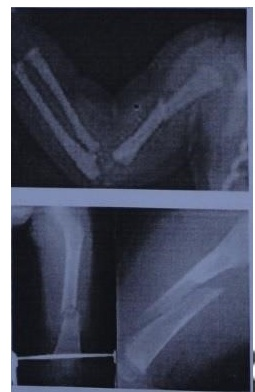

Questão 1 · Síndrome do Bebê Chacoalhado · 4000141066Menino de 2 meses, previamente hígido, dá entrada no pronto-socorro apresentando crise convulsiva há 20 minutos. Esse foi o primeiro episódio. Os pais negam febre ou outros sintomas. Ao exame físico, está em mau estado geral, sonolento, afebril, com frequência cardíaca de 160 bpm, frequência respiratória de 40 ipm, Glasgow = 10. Fundo de olho com presença de hemorragia retiniana. Sem outras alterações. A principal hipótese diagnóstica é:
A síndrome de West.
B reação pós-vacinal.
C meningoencefalite herpética.
D síndrome do bebê sacudido.
E sífilis congênita.
Questão 2 · Síndrome do Bebê Chacoalhado · 4000124380Francisco, 8 meses, portador de síndrome de Down, foi sacudido violentamente pelo pai, pois estava chorando muito, durante a madrugada. Qual a consequência mais característica deste tipo de maus tratos?
A Luxação C1-C2.
B Hemorragia retiniana.
C Fratura de clavículas.
D Hematoma temporal.
E Nenhuma das anteriores.
Questão 3 · Maus tratos à crianças e adolescentes · 4000119703Ao atender uma criança com manchas roxas em diferentes estágios pelo corpo, irritabilidade, choro sem causa aparente e higiene precária, qual é a conduta frente a essa situação?
A Realizar um Boletim de Ocorrência e passar o caso para o serviço social.
B Notificar apenas se o caso for confirmado ao Conselho Tutelar.
C Realizar um boletim de ocorrência e encaminhar para exame corpo de delito.
D Notificar o caso suspeito / confirmado ao Conselho Tutelar.
Questão 4 · Tratamento e Condutas · Diagnóstico · 4000115558Lactente do sexo masculino, 6 meses de idade, sem comorbidades, é levado ao pronto socorro por história de queda há 1 hora. Os familiares referem que a criança apresentou uma queda após tentar pular a grade do berço. Realizada radiografia do membro inferior esquerdo que demonstra fratura espiralada de fêmur. Realizada imobilização do membro. Para investigação da principal hipótese diagnóstica, está indicado:
A dosagem de cálcio, fosfatase alcalina e vitamina D.
B realização de cintilografia óssea com tecnécio.
C coleta de hemograma, VDRL e líquor.
D dosagem de função renal, gasometria e albumina sérica.
E realização de radiografia de ossos longos e fundo de olho.
Questão 5 · Maus tratos à crianças e adolescentes · 4000112483Os atendimentos e as internações de crianças vítimas de violência exigem maior atenção dos pro ssionais de saúde, tanto da atenção especializada quanto da atenção básica. Em relação à violência contra a criança, assinale a alternativa incorreta: I - São sequelas frequentes da síndrome do bebê sacudido: lesões oftalmológicas, hemorragia de retina, atraso no desenvolvimento, convulsões, fraturas de costelas, lesões na coluna, lesões ou hemorragias cerebrais (hematoma subdural).; II - Devem ser observadas: lesões não compatíveis com a idade ou o desenvolvimento psicomotor da criança como fraturas em crianças menores de 18 meses.; III - Síndrome de Münchausen por procuração: é a condição em que doenças ou sintomas são forjados na criança, em geral por suas mães. É um transtorno psiquiátrico da mãe, que assume a doença indiretamente, por intermédio da criança, exacerbando, falsi cando ou produzindo histórias clínicas e evidências laboratoriais, causando lesões físicas e induzindo a criança à hospitalização com procedimentos terapêuticos e diagnósticos desnecessários e potencialmente danosos para ela.; IV - Lesões em estágios diferentes de cicatrização ou cura são características de maus-tratos.; Assinale a alternativa CORRETA:
A Todas afirmações estão corretas
B Apenas uma afirmação está incorreta
C Apenas duas afirmações estão incorretas
D Apenas três afirmações estão incorretas
E Todas as afirmações estão incorretas
Questão 6 · Síndrome do Bebê Chacoalhado · 4000106434Um bebê de 9 meses é levado ao pronto-socorro pelos pais, com quadro de irritabilidade há três semanas, sonolência e choro intenso intermitente no mesmo período e alguns vômitos ocasionais. Os pais não sabem dizer se houve algum fator desencadeante e negam quaisquer outros sintomas associados. Nesse quadro clínico, dentre as alterações abaixo, espera- se encontrar a seguinte:
A Anemia normocítica e normocrômica.
B Amilase e lipase duas vezes maior que o valor de referência.
C Tomografia de crânio com hematoma extradural extenso.
D Fundo de olho com hemorragias perirretinianas.
E Trauma hepático à ultrassonografia de abdome.
Questão 7 · Maus tratos à crianças e adolescentes · 4000102251Sobre a segurança da criança e do adolescente, analise as assertivas abaixo e assinale a INCORRETA:
A Lesões que não são compatíveis com a idade ou com o desenvolvimento psicomotor da criança podem ser sinais de maus tratos.
B Deve-se notificar aos órgãos de proteção legal somente quando for confirmada a suspeita de maus tratos.
C A síndrome do bebê sacudido, além de lesões cerebrais que levam a alterações do nível de consciência, convulsões, déficits motores, pode também cursar com hemorragia retiniana.
D O abuso psicológico também é considerado uma forma de maus tratos e pode apresentar sintomas como irritabilidade e choro frequente, dificuldades na fala, gagueira, enurese, encoprese, tiques, entre outros.
Questão 8 · Apresentação Clínica · Diagnóstico · 4000097973Escolar, 7 anos, é trazido à sala de emergência com quadro de dor decorrente de queimaduras em membros superiores. Ao longo da consulta, o pediatra suspeitou de lesão intencional. A característica que sugere lesão por queimadura decorrente de agressão física é:
A Lesão em forma de luva.
B Lesões assimétricas e abrasivas.
C Lesão causada por líquido quente.
D Acometimento de áreas descobertas.
E Presença de sinais de infecção secundária
Questão 9 · Maus tratos à crianças e adolescentes · 4000074041Lactente de 7 meses com história de queda do berço ao tentar pulá-lo, dá entrada no pronto-atendimento. Apresenta hematomas em tronco e membro superior direito, além de fratura em metáfise proximal de tíbia direita. A conduta indicada, além do tratamento das lesões deve ser:
A Alertar a mãe para que fique mais atenta contra possíveis acidentes.
B Notificar ao suspeitar de maus-tratos.
C Orientar a mãe para que aumente a grade do berço.
D Denunciar a mãe à autoridade policial.
Questão 10 · Maus tratos à crianças e adolescentes · 4000063468Lesões corporais decorrentes de abuso e negligência contra a criança podem se manifestar de várias formas. Com relação ao abuso físico é importante a falta de um histórico plausível para o trauma. Qual a manifestação clínica mais comum do abuso físico:
A Escoriações nos membros
B Fraturas
C Contusões e equimoses
D Queimaduras
Questão 11 · Síndrome do Bebê Chacoalhado · 4000062218Você está de plantão e recebe um lactente de 6 meses trazido pela avó que se encontra muito preocupada. Relata que os pais da criança a levaram para sua casa como de hábito, porém ela notou a criança mais sonolenta e vomitou a mamadeira oferecida. Ela nega febre ou outros sintomas. Ao exame a criança está realmente sonolenta e pouco reativa, hipocorada, taquicárdica com FC: 165bpm. Eupneica e com boa saturação em ar ambiente. Fontanela anterior algo tensa. Presença de dermatite de fraldas. Apresenta alguns hematomas pelo corpo em diferentes estágios de evolução que a avó justi ca como um trauma por queda do sofá. Quando questionada conta que a mãe da criança trabalha muito e ainda cuida da casa e de outros dois lhos sozinha e que o tombo ocorreu em um segundo de desatenção há uma semana atrás. Não procurou o médico no dia. O fundo de olho realizado hoje demonstra hemorragia retiniana bilateral e papiledema. Considerando esse caso, é CORRETO afirmar que:
A Trata-se de quadro de sepse e deve ser iniciada antibioticoterapia empírica imediatamente.
B Trata-se de possível caso de maus tratos com quadro clínico sugestivo de síndrome do bebê sacudido (Shaken Baby).
C Esse quadro pode ser devido à queda do sofá ocorrida há uma semana, que pelo relato parece mesmo ter sido acidental.
D Deve ser investigada doença metabólica nessa criança, pois o quadro clínico é sugestivo.
Revisar: possível letra faltando em enunciado
Questão 12 · Síndrome do Bebê Chacoalhado · 4000062125Lactente de 5 meses é sacudida violentamente por seu pai, porque ""estava chorando muito e não deixava ninguém dormir"". A expressão clínica mais provável nesta categoria de maus tratos é:
A fratura de clavícula
B luxação atlantoaxial
C hematomas temporais
D hemorragias retinianas
Questão 13 · Maus tratos à crianças e adolescentes · 4000057845No diagnóstico de abuso e maus tratos contra a criança é correto afirmar que:
A É necessário, por parte do pediatra, ter certeza do diagnóstico de abuso físico para fazer a notificação às autoridades policiais e jurídicas de proteção à infância.
B As lesões consequentes, normalmente, são bem evidenciadas e mantêm boa correlação com a história contada na anamnese da criança.
C A demora em procurar atendimento pode ser um fator de suspeita de abuso ou negligência por parte dos pais ou responsáveis.
D Queimaduras, fraturas e equimoses não são manifestações comuns de abuso na infância.
E Geralmente os abusadores são pessoas estranhas e desconhecidas e andarilhos que ficam pelas ruas.
Questão 14 · Síndrome do Bebê Chacoalhado · 4000046090Em relação às crianças vítimas de violência, é correto afirmar:
A A profilaxia de gestação nos casos de abuso sexual deve ser aplicada nas primeiras 24 h, naquelas adolescentes que já menstruam, após o exame especular.
B Na síndrome do bebê sacudido, a criança agredida geralmente é do sexo masculino, menor de um ano, cuidado apenas por uma pessoa, também do sexo masculino.
C Fraturas sugestivas de maus tratos geralmente são únicas, mais presentes em ossos longos, em maiores de 2 anos de idade.
D A síndrome de Munchausen por procuração é caracterizada pela simulação de doenças no cuidador da criança, sendo causa de frequentes atrasos ou omissões em seu atendimento.
Questão 15 · Síndrome do Bebê Chacoalhado · 4000036035A Síndrome do bebê sacudido é uma forma grave de abuso físico infantil, que merece atenção especial pela di culdade diagnóstica e pelo seu alto potencial de causar dano cerebral permanente, atraso mental ou mesmo morte. Sobre esta Síndrome podemos afirmar que
A é uma agitação vigorosa do corpo da criança com sacudidas exageradas da cabeça quando a criança estiver sendo contida pelas suas extremidades.
B na maior parte das vezes, ao exame físico são evidenciados sinais exteriores do traumatismo craniano sofrido.
C na maior parte das ocasiões é acompanhada de hematomas visíveis ou de fratura de ossos do crânio ou de ossos longos.
D costuma ser identificada em crianças acima de 2 anos de idade e, especialmente, ao redor de 36 meses de vida.
Questão 16 · Apresentação Clínica · Diagnóstico · 4000026763Um médico é chamado para avaliar um menino de dez meses trazido por causa de redução do movimento do braço esquerdo. Sua mãe está muito ansiosa e relata que ele caiu da cama em que ela estava, depois de uma soneca naquela manhã. Exceto por hematomas e dor à movimentação do braço esquerdo, os achados no exame físico são normais. A radiogra a de ossos longos revela uma fratura aguda do úmero direito e duas fraturas em cicatrização das costelas esquerdas. Sua mãe a rma não ter conhecimento quanto às fraturas das costelas e nega trauma anterior. Das características abaixo, quais são consideradas alarmantes para que se suspeite de violência contra a criança?
A Lesões que envolvem regiões geralmente expostas, na parte frontal do corpo, como fronte, queixo e cotovelo.
B Lesões compatíveis com o estágio do desenvolvimento neuropsicomotor da criança.
C Lesões bilaterais em região de órbitas, isoladas, sem comprometimento de nariz ou outras áreas da face.
D Lesões escoriadas que se encontram no mesmo estágio de cicatrização, mesmo que ocorram em um único membro.
Questão 17 · Maus tratos à crianças e adolescentes · 4000026747Um médico é chamado para avaliar um menino de dez meses trazido por causa de redução do movimento do braço esquerdo. Sua mãe está muito ansiosa e relata que ele caiu da cama em que ela estava, depois de uma soneca naquela manhã. Exceto por hematomas e dor à movimentação do braço esquerdo, os achados no exame físico são normais. A radiogra a de ossos longos revela uma fratura aguda do úmero direito e duas fraturas em cicatrização das costelas esquerdas. Sua mãe a rma não ter conhecimento quanto às fraturas das costelas e nega trauma anterior. A situação descrita indica um forte indício de violência doméstica (ou intrafamiliar), devendo ser considerado que:
A a suspeita clínica sem provas não deve ser notificada, embora possa se tratar de violência doméstica, diante da possibilidade de danos morais aos pais ou responsáveis.
B a violência doméstica é uma forma comum encontrada na infância e na adolescência, sendo os principais agressores, na maioria dos casos, seus responsáveis diretos.
C o fluxo do atendimento é determinado por diretrizes, sendo a conduta a ser tomada, do ponto de vista clínico, padronizada para todos os casos, independente da gravidade das lesões.
D a notificação ao Sistema de Notificação de Agravos de Notificação (Sinan), além do tratamento a ser instituído, nos casos de suspeita, garante a proteção à vítima.
Questão 18 · Diagnóstico · 4000119198Maria, 2 anos de vida, foi levada ao pronto-socorro de pediatria com queixas respiratórias. O pediatra de plantão julgou necessária a realização de uma radiografia de tórax, que não mostrou alterações pulmonares, mas evidenciou uma fratura de costela, com calo ósseo, sem sinais de osteopenia, na imagem. A principal hipótese diagnóstica é:
A Osteopenia da prematuridade.
B Deficiência de vitamina D.
C Trauma intencional.
D Trauma não intencional.
Questão 19 · Maus tratos à crianças e adolescentes · 4000108402Considere a alternativa que indique sinais físicos decorrentes de violência infantil:
A Tristeza, abatimento profundo, depressão (em razão de sentimento de culpa, de sentir-se "mau").
B Masturbação excessiva, brincadeiras sexuais agressivas.
C Afastamento, isolamento social, existência de poucos amigos da mesma faixa etária.
D Distúrbios na alimentação (perda ou ganho excessivo de peso).
Questão 20 · Maus tratos à crianças e adolescentes · 4000108358Toda forma de rejeição, depreciação e desrepeito cometidos contra a criança são descritos como violência:
A Psicológica.
B Física.
C Sexual.
D Omissa.
Questão 21 · Tratamento e Condutas · 4000099186Avalie as alternativas abaixo e assinale a INCORRETA quanto à criança ou adolescente vítima de violência doméstica.
A A negligência é uma das formas de violência que se caracteriza pela omissão de cuidados básicos para o desenvolvimento físico, emocional e social da criança ou adolescente.
B Lesões não compatíveis com o desenvolvimento neuropsicomotor da criança, em múltiplas partes do corpo, em diferentes estágios de evolução e cicatrização são lesões sugestivas de abuso.
C Fraturas múltiplas, bilaterais, em diferentes estágios de consolidação são consideradas sugestivas de maus-tratos.
D Os casos, após a confirmação de violência, devem ser notificados ao Conselho Tutelar do local de moradia da vítima.
Questão 22 · Síndrome do Bebê Chacoalhado · 4000070528Lactente de três meses foi levado para consulta médica de puericultura pela mãe e pela avó. Ambas referiram que a criança tem choro intenso desde que nasceu, está em aleitamento materno exclusivo e seu crescimento e desenvolvimento são normais até o momento. A mãe queixou-se de estar muito cansada e a avó comentou que o pai tem sido bastante agressivo com a mãe (às vezes a empurrando), especialmente após o nascimento do bebê. Ao exame, o lactente está em bom estado geral, ativo e reativo, eupneico, sem alterações à auscultura ou à palpação abdominal. Entretanto, notam-se dois hematomas em região do dorso. A radiogra a de tórax revelou um calo ósseo em uma costela à direita e uma pequena fratura em outra à esquerda. Uma conduta fundamental a ser realizada nessa criança é:
A fundo de olho
B cintigrafia óssea
C tomografia de tórax
D dosagem de fosfatase alcalina
Questão 23 · Tratamento e Condutas · 4000051476Lactente de 18 meses é trazido ao setor de emergência com queixas de irritabilidade alternados com episódios de apatia. Ao examiná-lo você identi ca várias equimoses em face, tronco, dorso, com várias colorações, algumas com marcas de instrumentos. Pais relatam que frequentemente apresenta quedas e que é muito "arteiro". Na avaliação da sua suspeita diagnóstica, analise as alternativas abaixo. I - Uma boa estratégia é perguntar diretamente à criança "Seu pai bateu em você?" II - Você deve notificar o caso e informar diretamente à família sobre a notificação. III - Após exame físico minucioso, liberar a criança para o domicílio e com encaminhamento ao IML, após a notificação. Estariam corretas as alternativas.
A I apenas.
B II apenas.
C III apenas.
D I e II apenas.
E II e III apenas.
Revisar: possível letra faltando em enunciado
Questão 24 · Tratamento e Condutas · Diagnóstico · 4000039813Menina de 6 anos é levada a uma Unidade de Pronto Atendimento (UPA) com relato de queda da própria altura e perda de consciência. A responsável relatou que o fato ocorreu em casa, há 4 horas e foi consequência de um escorregão. Ao exame, a paciente encontra-se com face de dor, chorosa, com hematoma subgaleal frontal, escoriações em face, hematomas em braço esquerdo e coxa direita, Glasgow 15, FC = 120bpm; FR = 24irpm. Na tomogra a de crânio foi encontrado fratura de osso frontal com hemorragia intracraniana e, na radiogra a de ossos longos, calo ósseo em braço esquerdo e coxa direita. Sobre o caso descrito, assinale a alternativa CORRETA:
A A paciente teve um acidente domiciliar trivial, deverá ser internada para observação e liberada com analgésicos caso não apresente intercorrências.
B A paciente apresenta lesões recentes e tardias no exame físico e nos exames de imagem e deve-se suspeitar de maus tratos e acionar os órgãos responsáveis.
C A paciente teve um acidente domiciliar e todas as alterações encontradas são condizentes com a história do trauma relatado.
D A paciente teve um Trauma Crânio Encefálico (TCE) grave e apresenta calos ósseos o que leva a suspeitar de uma osteopenia crônica.
Questão 25 · Tratamento e Condutas · 4000038983Sobre o atendimento às crianças vítimas de maus tratos, é correto afirmar:
A O atendimento deverá ser realizado em ambiente reservado e acolhedor, com a participação de outro profissional e familiar da vítima, no intuito de haver discussão diagnóstica e testemunha do que foi detectado na anamnese e no exame físico.
B O médico pediatra pode se negar a atender a criança ou adolescente vítima de violência sexual, se as questões policiais e judiciais não forem empregadas imediatamente à chegada da vítima no local de atendimento.
C A preocupação centrada em confirmar de imediato a suspeita de violência ou em identificar o agressor deve ser prioritária no momento do atendimento, uma vez que a simples suspeita de maus-tratos não configura indicação de avaliação clínica e multidisciplinar, tratamento necessário, bem como notificação.
D As questões policiais e judiciais devem ser abordadas após o atendimento das necessidades emergenciais médicas da vítima. A recusa infundada do atendimento médico caracteriza-se, ética e legalmente, como imperícia e omissão de socorro, com todas as suas consequências.
Questão 26 · Síndrome do Bebê Chacoalhado · 4000028306Lactente de um mês é sacudido violentamente pela mãe adolescente que apresenta quadro depressivo e fadiga devido à falta de sono. A expressão clínica mais comum nesta categoria de maus-tratos é:
A Hematoma temporal.
B Hemorragia retiniana.
C Fratura de clavícula.
D Fratura de úmero e arcos costais.
Questão 27 · Tratamento e Condutas · Diagnóstico · 4000019383Mãe leva seu lho de 18 meses de idade para atendimento em urgência pediátrica com quadro de choro persistente após queda quando brincava no parquinho. Mãe relata que criança tem di culdade de andar e sempre está caindo. Ao exame, a criança era eutró ca, apresentava-se assustada, bastante chorosa, com ausculta cardíaca e pulmonar normais, com dor à manipulação de membro inferior direito e presença de duas equimoses face medial e posterior da coxa direita. A radiogra a de membros inferiores evidenciou fratura em meta sária em "alça de balde" em região de fêmur direito e presença de fratura em tíbia esquerda em consolidação. Diante do quadro acima descrito, qual a melhor conduta?
A Providenciar a imobilização imediata do membro fraturado e encaminhamento para geneticista para avaliação e acompanhamento.
B Solicitar avaliação do ortopedista para imobilização do membro e posteriormente alta do paciente com orientações para cuidados no domicílio.
C Acionar o instituto médico legal para avaliação das lesões e providenciar encaminhamento para centro de referência em traumatologia ortopédica infantil.
D Solicitar investigação radiológica completa e notificar a suspeita de maus tratos ao Conselho Tutelar e no Sistema de Informação de Agravos de Notificação.
Revisar: possível letra faltando em enunciado
Questão 28 · Maus tratos à crianças e adolescentes · 4000017498As situações de violência e maus tratos a criança e ao adolescente certamente geram sequelas em curto e em longo prazo no indivíduo agredido e em toda sociedade. Os pro ssionais de saúde precisam estar sempre atentos para o diagnóstico precoce de violência infantil. Marque a afirmativa correta:
A É aceitável que bater em crianças ou adolescentes em condições limitadas não configura abuso, a menos que acarrete lesões com fraturas, hematomas, etc.
B Todas as crianças sob acolhimento institucional tem direito a avaliação completa de saúde mental assim como a indicação ao uso de medicamentos psicotrópicos.
C A remoção da criança de um lar caótico é sempre bem recebido pelas crianças e adolescentes com a sensação de alivio imediato.
D A maneira mais simples de reconhecer a possibilidade de violência intrafamiliar é observar regularmente os pais e as crianças.
Questão 29 · Tratamento e Condutas · Diagnóstico · 4000005444Menina de 9 meses de idade é trazida pela mãe ao pronto-socorro com história de queda do berço há um dia. Ao exame, observa-se uma criança muito chorosa, irritada, com aumento de volume no braço direito e coxa esquerda, além de equimoses na parte anterior e posterior do tórax em diferentes estágios de evolução. O exame radiológico indica fratura recente de fêmur esquerdo e calo ósseo em úmero direito. Além da radiogra a de esqueleto, quais condutas são mais adequadas ao caso?
A Tomografia de crânio, hemograma, encaminhamento ambulatorial para investigação e notificação de violência.
B Internação, tomografia de crânio, hemograma e contato imediato com a autoridade policial.
C Internação, hemograma, ultrassonografia transfontanelar e solicitação de avaliação genética e hematológica.
D Hemograma, coagulograma, encaminhamento ambulatorial para investigação e contato com a vara da infância e/ou conselho tutelar.
E Internação, tomografia de crânio, fundo de olho, notificação de violência, contato com a vara da infância e/ou conselho tutelar.
Questão 30 · Maus tratos à crianças e adolescentes · 4000128060Sobre a segurança da criança e do adolescente, analise as assertivas abaixo e assinale a INCORRETA:
A Lesões que não são compatíveis com a idade ou com o desenvolvimento psicomotor da criança podem ser sinais de maus tratos.
B Deve-se notificar aos órgãos de proteção legal somente quando for confirmada a suspeita de maus tratos.
C A síndrome do bebê sacudido, além de lesões cerebrais que levam a alterações do nível de consciência, convulsões, déficits motores, pode também cursar com hemorragia retiniana.
D O abuso psicológico também é considerado uma forma de maus tratos e pode apresentar sintomas como irritabilidade e choro frequente, dificuldades na fala, gagueira, enurese, encoprese, tiques, entre outros.
Questão 31 · Apresentação Clínica · 4000126054Quais são os tipos de fraturas que tem alta especificidade de maus tratos na criança segundo Kleinman?
A Fraturas nas metáfises, fratura posterior de costela e de escápula correta.
B Fraturas das diáfises, fratura dos corpos vertebrais.
C fratura da clavícula e diáfise de fêmur.
D Fratura de ossos chatos.
E Fratura das mãos e pés.
Questão 32 · Maus tratos à crianças e adolescentes · 4000122046Lactente de 8 meses, sexo feminino, previamente hígida, é trazida à emergência, inconsciente após crise convulsiva generalizada. A mãe refere que, ao chegar do trabalho cerca de duas horas atrás, notou que a criança estava bem sonolenta e chorando fraco. Ao exame, observa-se que seu estado é grave, está muito sonolenta, pálida, respondendo mal aos estímulos super ciais e profundos, com respiração super cial. Fundo de olho revela hemorragia retiniana bilateral. Face ao exposto, a principal hipótese é:
A Síndrome do bebê sacudido.
B Meningite.
C Aspiração corpo estranho.
D Retinoblastoma.
E Tumor cerebral.
Questão 33 · Apresentação Clínica · 4000094557Assinale o fator que pode ser indicativo de maus-tratos a crianças.
A Família de baixa renda
B Família com grande número de filhos
C Múltiplas fraturas em diferentes estágios de resolução
D Criança fora da escola
E Pai dependente de drogas
Questão 34 · Def inição e Epidemiologia · 4000083132Analise as assertivas abaixo sobre maus tratos na infância e adolescência: I. A ocorrência de óbitos é maior quando envolve adolescentes.; II. Na maioria dos casos, a violência é exercida por familiares ou responsáveis.; III. A negligência deixou de ser considerada uma forma de maus tratos desde 2010.; Quais estão corretas?
A Apenas I.
B Apenas II.
C Apenas III.
D Apenas I e II.
E I, II e III.
Questão 35 · Maus tratos à crianças e adolescentes · 4000055248A violência contra a criança e adolescentes nem sempre é o motivo principal do atendimento pediátrico. É papel de todo pediatra identi car a suspeita, assegurar o diagnóstico correto, o tratamento e a proteção adequados para toda criança e adolescente em situação de risco de violência. Sobre isso é correto afirmar:
A Mortes de crianças em colisões podem ser prevenidas pelo uso das "cadeirinhas" de segurança no transporte em automóveis. Apesar disso, sua ocorrência não pode ser caracterizada por negligência dos cuidadores.
B A Síndorme de Munchausen é caracterizada como a situação na qual o paciente é trazido para cuidados médicos, mas os sintomas e sinais que apresentam são inventados, simulados ou provocados por seus pais ou responsáveis. Contudo, não se enquadra em uma forma de violência contra a criança ou adolescente por se tratar de doença psiquiátrica.
C A suspeita clínica de violência física requer exames subsidiários para sua confirmação e desencadeamento de medidas de proteção.
D Fraturas em membros inferiores de crianças que ainda não andam são bastante comuns. Portanto, se encontradas em radiografias, especialmente se fraturas espiraladas, não sugerem maus tratos.
E A notificação de violência e maus-tratos praticados contra crianças e adolescentes é obrigatória por lei federal e de responsabilidade de todos os profissionais de saúde e da área da educação. Deve ser efetivada a partir de suspeitas consistentes, ou quando da confirmação.
Questão 36 · Maus tratos à crianças e adolescentes · 4000055228Em relação à violência contra a criança e adolescente, nem sempre o diagnóstico é fácil, requer atenção do médico e de toda a equipe de saúde. Sobre isso é correto afirmar:
A Pais que mudam de história toda vez que investigados, demora inexplicável na procura de recursos médicos na presença evidente de trauma, crianças maiores que não querem relatar o que aconteceu, incompatibilidade entre dados da história e os achados clínicos são dados da anamnese que sugerem vitimização física.
B Queimaduras, especialmente quando são de extremidades e são simétricas (tipo "luva" ou "bota") normalmente não estão associadas a maus tratos e violência.
C Em respeito ao princípio bioético da autonomia, o fato de pais de recusarem a vacinar seus filhos por motivos dogmáticos, religiosos ou filosóficos não pode ser considerada negligência.
D O Conselho Tutelar só deve ser notificado quando a criança ou adolescente em situação de violência apresentar lesões importantes ou nos casos de risco de revitimização com seu retorno a sua residência.
E A síndorme do bebê sacudido caracteriza-se por lesões do SNC e hemorragias oculares provocadas por chacoalhamento de crianças pequenas. O ato de chacoalhar a criança precisa ser prolongado, ocorrer repetidas vezes ou durante vários dias.
Questão 37 · Síndrome do Bebê Chacoalhado · 4000050820Um lactente de cinco meses dá entrada no setor de emergência por alteração no nível de consciência. Pais relatam que o quadro iniciou no dia anterior após uma queda não testemunhada da cama dos pais. Ao exame, paciente torporosa, irritada ao manuseio, pares cranianos normais, equimoses em dorso. Qual o tipo de lesão será mais provável de ser observada ao realizar tomografia de crânio deste paciente?
A Tomografia normal.
B Hematoma epidural.
C Hematoma subdural.
D Lesão axonal difusa.
E Hemorragia subaracnoide.
Questão 38 · Def inição e Epidemiologia · 4000040527Qual a forma mais comum de maus-tratos à criança?
A Negligência
B Abuso físico e emocional
C Síndrome de Munchausen por procuração
D Abuso sexual
Questão 39 · Diagnóstico · Diagnósticos Dif erenciais · 4000024046Uma criança de três meses de idade é atendida no pronto-socorro, acompanhada de seus pais. O pai informa que o bebê estava perfeitamente bem até o dia anterior, quando, subtamente, prostrou-se. A mãe concorda, mas relata que o bebê sempre foi muito irritado e que estranhou muito este comportamento repentino. Nessa mesma noite, a criança apresentou vários momentos estranhos enquanto dormia. Logo pela manhã, os movimentos anormais continuaram, motivando os pais a trazerem-na para uma avaliação. Ao exame físico, a criança apresentava-se pálida, afebril, prostrada, FC = 150 bpm, PA = 100 x 50 mmHg e saturação de oxigênio de 94% em ar ambiente. Fontanela palpável e levemente abaulada. Auscultas pulmonar e cardíaca normais, abdome ácido, indolor e sem massas palpáveis. Foi inventada a possibilidade de meningite, sendo solicitados hemograma, proteína C reativa (PCR) e tomogra a de crânio, antes de se realizar a punção lombar. O hemograma apresentava apenas anemia e o PCR era positivo. A tomogra a de crânio mostrava a seguinte imagem. Após a avaliação desta imagem, a hipótese diagnóstica principal é:

A maus-tratos.
B malformação anteriovenosa.
C doença hemorrágica do recém-nascido tardia.
D abcesso cerebral.
Questão 40 · Apresentação Clínica · Def inição e Epidemiologia · 4000003183Em relação ao abuso infantil, é correto afirmar:
A Os agressores geralmente são os próprios pais da criança.
B O abuso físico geralmente não deixa marcas.
C O abuso sexual na maioria das vezes deixa marcas.
D O abuso psicológico é um dos mais fáceis de ser caracterizado.
Questão 41 · Síndrome do Bebê Chacoalhado · 4000126366Rafaela, 6 meses de idade, portadora de síndrome de Down, é trazida à emergência pediátrica. Apresenta rebaixamento do nível de consciência (Glasgow 9), com fontanela anterior abaulada e anisocoria. TC de crânio mostra hematoma extradural importante. Acompanhantes negam episódios de traumas na cabeça, mas a rmam que há 24 horas a criança teve grande di culdade para dormir devido a cólicas, causando grande discussão familiar, “pois o pai precisava acordar cedo”. Que outra alteração no exame físico deverá ser encontrada?
A Hemorragias retinianas.
B Massa abdominal.
C Petéquias no MMII.
D Mielomeningocele.
E Nenhuma das respostas anteriores está correta.
Questão 42 · Maus tratos à crianças e adolescentes · 4000097296Os casos de maus-tratos contra crianças e adolescentes são considerados casos de saúde pública. Sobre os maus-tratos, é correto afirmar que:
A só devem ser notificados ao conselho tutelar casos confirmados de maus-tratos
B caso o médico não comunique situações de maus-tratos, ele está sujeito a multa
C em caso de violência sexual, os agressores são, na maioria das vezes, pessoas desconhecidas
D o sigilo profissional impede a comunicação de violência contra a criança sem a autorização da vítima ou de seu responsável
Questão 43 · Síndrome do Bebê Chacoalhado · 4000096487Em relação à Síndrome do "Bebê Sacudido", podemos afirmar, EXCETO:
A Pode-se ter lesões esqueléticas, como fraturas em arcos posteriores das costelas.
B Pode-se ter hemorragias retinianas.
C É uma forma de maus-tratos que pode levar a sintomas inespecíficos, tais como sonolência, irritabilidade, vômitos, convulsões.
D A ação precisa ser prolongada e repetida para que as lesões tornem-se evidentes.
Questão 44 · Maus tratos à crianças e adolescentes · 4000073197No campo da violência contra a criança e o adolescente, as definições e situações importantes a serem conhecidas são:
A A violência física em crianças e adolescentes é, em geral, associada à disciplina e à punição, sendo uma causa de menor importância de morbimortalidade.
B A negligência ou abandono estão presentes nas classes sociais mais baixas e são importantes na notificação para os conselhos tutelares e Ministério Público.
C A violência psicológica é toda ação e omissão que coloca em risco ou causa danos à autoestima, à identidade e ao desenvolvimento da criança e do adolescente.
D Entre os sinais de alarme para o diagnóstico da Síndrome de Münchhausen por procuração, é comum os sinais e sintomas ocorrerem principalmente na presença dos pais.
Questão 45 · Maus tratos à crianças e adolescentes · 4000070338Para os pediatras, a defesa da saúde física e mental das crianças é um compromisso primordial, marca muito importante de sua prática pro ssional. Reconhecer e combater os maus-tratos, que comprometem a integridade física e mental das crianças é uma questão que pode infelizmente, fazer parte do atendimento. Com relação à violência contra a criança, pode- se afirmar que:
A Lesões físicas, normalmente inexplicadas, não podem servir de base para o diagnóstico.
B A maioria dos pais ou cuidadores envolvidos com violência contra a criança apresentam sinais de distúrbios psiquiátricos.
C Apesar de muitas vezes evidente a situação de maus-tratos, o pediatra somente poderá fazer a denúncia se tiver certeza do diagnóstico.
D Quando se suspeita de abusos físicos contra a criança < 2 anos, é necessária radiografia de ossos longos, crânio, tórax, mãos e pés, e bacia, sendo Apesar de muitas vezes evidente a situação de maus-tratos, o pediatra somente poderá fazer a denúncia se tiver certeza do diagnóstico necessária a repetição das mesmas radiografias entre 7 e 10 dias.
Questão 46 · Síndrome do Bebê Chacoalhado · Diagnóstico · 4000063606Lactente de quatro meses, trazido pela mãe a Unidade de Pronto Atendimento (UPA). Ela refere ter encontrado o lho desmaiado e caído ao pé da escada de sua casa. Ao exame não apresenta equimoses ou hematomas na cabeça. Tem o membro inferior esquerdo engessado devido queda anterior que provocou a fratura do fêmur. Fundo de olho apresenta hemorragia retiniana e a tomogra a computadorizada de crânio evidencia hemorragia subaracnóidea. Com base na história anterior e atual o diagnóstico provável é:
A Traumatismo crânio encefálico – devido queda.
B Acidente vascular cerebral - má formação vascular cerebral.
C Síndrome do bebê sacudido – maus tratos.
D Síndrome convulsiva – epilepsia.
Questão 47 · Maus tratos à crianças e adolescentes · 4000060368Quanto a maus-tratos na infância e na adolescência, assinale a alternativa CORRETA:
A o atendimento a crianças vítimas de violência (maus-tratos) no Brasil encontra-se bem estruturado nos serviços de saúde.
B os profissionais de saúde podem manter sigilo médico frente a suspeita de maus-tratos, não existindo obrigatoriedade em notificar
C suspeitar de maus-tratos frente a múltiplas fraturas inexplicáveis em estágios diferentes de consolidação e história incompatível com as leões existentes
D normalmente o abusador de crianças e adolescentes são pessoas distantes e sem contato afetivo com a família
E não se considera como maus-tratos recriminações, desqualificações, ameaças ou castigos excessivos a criança ou adolescente
Questão 48 · Síndrome do Bebê Chacoalhado · 4000057109Lactente de 4 meses, feminino, é levada ao pronto-atendimento após episódio convulsivo. A criança dá entrada ao serviço inconsciente. A acompanhante, mãe, refere que o quadro de convulsão ocorreu após o irmão jogar um carrinho contra a cabeça do lactente. Realizada fundoscopia com hemorragia retiniana bilateral. A sua hipótese diagnóstica é:
A Ruptura de aneurisma cerebral.
B Hematoma extradural.
C Intoxicação exógena.
D Coagulopatia adquirida.
E Síndrome de maus tratos.
Questão 49 · Maus tratos à crianças e adolescentes · 4000056146A violência física é responsável por cerca de 25% de todas as formas de abuso à criança e proporcionalmente, também, por mortalidade. A síndrome do bebê sacudido pode ocorrer em crianças menores de 3 anos, provocada por chacoalhamento, que não precisa ser por tempo prolongado, uma ou várias vezes repetidas por vários dias, semanas ou meses. Esta síndrome é de difícil diagnóstico, podendo provocar danos significativos e óbito. Os achados que caracterizam a síndrome são:
A Hemorragia subdural aliada à presença de hemorragias retinianas, ausência de história de grande traumas.
B Rupturas de fígado ou baço, podendo levar a um quadro característico de abdome agudo.
C Hemotórax ou pneumotórax secundários à fratura de costelas. (Raras em traumas acidentais).
D Hematomas extradurais associados a fratura de crânio, hemorragia do nervo óptico e hematomas.
E Equimose periorbital e do mastoide, hemotímpano, otorragia ou rinorragia com fluido cérebro espinhal.
Questão 50 · Tratamento e Condutas · 4000052290Você está de plantão em um Pronto-socorro Infantil e uma criança de 6 meses é trazida pela mãe com história de ter caído ao tentar pular a grade do berço. Ao exame, a criança apresenta-se bastante chorosa, com presença de hematoma no tronco e fratura na metáfise proximal da tíbia direita. A conduta ADEQUADA, além dos cuidados com as lesões, é:
A denunciar a mãe à autoridade policial.
B orientar a mãe para que aumente a grade do berço, para que isso não volte a acontecer.
C notificar a suspeita de maus tratos.
D encaminhar a criança para exame de corpo de delito com médico legista.
Questão 51 · Maus tratos à crianças e adolescentes · 4000046304Em um paciente com história de trauma acidental, em que existe uma incompatibilidade entre o mecanismo explicado do trauma e o grau de desenvolvimento da criança, devemos sempre avaliar a possibilidade de maus tratos. Outro fator de alerta é a demora em procura por atendimento ou acidente não testemunhado. Dos fatores relacionados aos maus tratos podemos afirmar que:
A As fraturas ósseas predominam nos membros inferiores.
B Tem igual distribuição em todos os níveis socioeconômicos.
C É mais comum sua ocorrência em meninos do que em meninas.
D O principal agressor relacionado é o pai e em segundo o padrasto.
E É mais comum sua ocorrência em crianças menores de três anos de idade.
Questão 52 · Síndrome do Bebê Chacoalhado · 4000034040Bebê de 4 meses de idade, é trazido ao pronto-socorro com convulsões prolongadas e exibe múltiplas equimoses antigas pelo corpo. Levantada a hipótese de maus tratos infantis e a síndrome do bebê sacudido. Qual das a rmativas abaixo é a correta?
A Na síndrome do bebê sacudido o agressor geralmente é o pai biológico, que se irrita com o choro da criança.
B As lesões em diferentes estágios de cura não são suficientes para a suspeita de maus tratos, já que nessa faixa etária podem ocorrer vários pequenos acidentes.
C Na síndrome do bebê sacudido ocorrem lesões do sistema nervoso central pela ruptura das veias levando a hemorragia subdural, sem a presença de hemorragias oculares.
D Na síndrome do bebê sacudido o agressor geralmente é portador de doença mental grave.
E A síndrome do bebê sacudido ocorre com maior frequência após o primeiro ano de idade.
Questão 53 · Síndrome do Bebê Chacoalhado · 4000026386São características clínicas da síndrome do "bebê sacudido":
A Hemorragia subaracnoide, fraturas ósseas, hematomas em diferentes estágios de evolução.
B Hemorragia epidural, hemorragia vítrea, fratura de base de crânio.
C Fratura de arco costal, hemorragias periventriculares, hematoma periorbital.
D Hemorragia subdural, edema cerebral difuso, hemorragia retiniana.
E Hemorragia vítrea, edema cerebral difuso, fraturas ósseas.
Questão 54 · Síndrome do Bebê Chacoalhado · 4000005078A síndrome do bebê sacudido compreende:
A Situação em que foi utilizada a força física de forma acidental praticada por outra criança durante uma brincadeira.
B Situação em que foi utilizada a força física de forma intencional, não acidental, praticada provavelmente por um responsável pela criança.
C Negligência, um ato extremo de omissão, e deve-se ter cuidado ao imputar intenção ao evento.
D Maus tratos psicológicos, que podem causar danos ao desenvolvimento físico e psíquico da criança.
E Criança espancada, pois são observados ferimentos inusitados que devem ser comprovados por radiografias.
Questão 55 · Síndrome do Bebê Chacoalhado · 4000000287Na síndrome do Bebê Sacudido, poderemos encontrar, exceto:
A A criança pode apresentar sinais de espancamento, como fratura de costelas ou sinais discretos de lesões traumáticas em regiões cobertas por roupas.
B A criança apresenta geralmente com quadro de menor atividade progressiva (letargia).
C A criança frequentemente é filha de pais adolescentes jovens.
D Podem ser filhos de pais drogaditos.
E A tomografia craniana frequentemente não apresenta lesões sugestivas.
Questão 56 · Maus tratos à crianças e adolescentes · 4000077735As injúrias não intencionais apresentam elevadas taxas de morbidade e mortalidade na faixa etária pediátrica. Sobre elas, é CORRETO afirmar:
A A idade da criança não interfere na ocorrência do tipo de injúria nem na maior vulnerabilidade de um gênero sobre o outro.
B As condições socioeconômicas, o grau de escolaridade dos pais e famílias numerosas não têm interferência na ocorrência dessas injúrias.
C A ocorrência é menor em famílias monoparentais e com melhores condições socioeconômicas.
D A idade é um importante fator que condiciona o tipo de injúria, determinando as chamadas "janelas de vulnerabilidade" e a gravidade da injúria.
Questão 57 · Diagnóstico · 4000077711Criança de 3 anos chega em pronto-socorro com queimadura envolvendo toda a mão direita (em luva) com limites bem definidos - linha regular até onde esse membro havia sido mergulhado no líquido quente. Esses achados são característicos de
A Injúria não intencional
B Acidente doméstico
C Injúria intencional
D Autoagressão
Questão 58 · Maus tratos à crianças e adolescentes · 4000077275Em relação à violência contra a criança todas as assertivas abaixo estão corretas, EXCETO:
A A notificação da violência só deve ser realizada se houver confirmação visual ou laboratorial.
B Aproximadamente 10% dos casos envolvem queimaduras.
C Fraturas de costela são incomuns em crianças sendo um fator de suspeita de abuso físico.
D No caso de suspeita de maus tratos em menores de 2 anos de idade devem ser solicitadas múltiplas radiografias(extremidades, tórax, crânio e coluna vertebral).
E A maior causa de morte é o traumatismo crânio encefálico.
Questão 59 · Síndrome do Bebê Chacoalhado · 4000057087Lactente de dois meses é trazido à emergência, apresentando crise convulsiva generalizada. O pai refere que a criança, há duas horas, vinha apresentando sonolência, letargia e choro fraco. Ao exame, seu estado é grave. Encontra-se sonolento, pálido, respondendo mal aos estímulos superficiais e profundos e bradipneico. O exame de fundo de olho revela papiledema e hemorragia retiniana. O diagnóstico mais provável é:
A Meningite.
B Septicemia.
C Retinoblastoma.
D Síndrome do bebê sacudido.
E Aspiração de corpo estranho.
Questão 60 · Apresentação Clínica · Diagnóstico · 4000051024Escolar de 6 anos, é trazido à sala de emergência com quadro de dor decorrente de queimaduras. Ao longo da consulta, a pediatra suspeitou de lesão intencional. Qual das caractéristicas abaixo NÃO é considerada típica de lesão por queimadura decorrente de agressão física:
A Acometimento de áreas descobertas.
B Por líquidos quentes que não respeitam a ação da gravidade.
C Em regiões de nádegas ou períneo.
D Em forma de luvas (mãos) ou meias (pés).
Questão 61 · Síndrome do Bebê Chacoalhado · 4000029377Lactente de 6 meses foi vítima de maus tratos por parte de sua cuidadora. A hipótese é que essa criança tenha sido sacudida violentamente. A expressão clínica mais provável nesta categoria de maus tratos é:
A Hematomas temporais.
B Luxação atlantoaxial.
C Fratura de clavícula.
D Hemorragias retinianas.
Questão 62 · Def inição e Epidemiologia · 4000027081Assinale as características mais comumente encontradas nos agressores de crianças e adolescentes.
A Indivíduos com autoestima elevada.
B Ausência de história pregressa de maus tratos.
C Histórico de alcoolismo e/ou drogas, desemprego, portadores de distúrbios psicológicos e distúrbio familiar.
D Casais maduros com filhos pequenos.
E Grupos socioeconômicos mais altos.
Questão 63 · Síndrome do Bebê Chacoalhado · Apresentação Clínica · Diagnóstico · 4000015341Durante plantão no pronto-socorro infantil, você atende uma criança de 11 meses que dá entrada em mau estado geral, pálida, com crises convulsivas e hipótese de traumatismo cranioencefálico. Durante a avaliação clínica é realizado exame de fundo de olho que revela hemorragia retiniana bilateral. Qual é a hipótese MAIS provável para esse caso?
A Acidente doméstico.
B Queda da própria altura.
C Maus tratos.
D Tumor cerebral.
Questão 64 · Apresentação Clínica · 4000009011Em relação à investigação diagnóstica de síndrome dos maus-tratos em crianças, assinale a fratura que representa “alto risco” de suspeita:
A Fratura de clavícula.
B Fratura de arco costal posterior.
C Fratura linear do crânio.
D Fratura de corpo vertebral.
Questão 65 · Tratamento e Condutas · Diagnóstico · 4000008714Uma criança de 7 meses chega ao serviço de emergência após relato de queda da cadeira de alimentação. Os pais não mencionam perda de consciência, outros traumas ou problemas médicos. Seu exame clínico revela algumas equimoses antigas, mas nenhuma evidência de trauma agudo ou fratura. Ele está irritado, então você solicita uma TC de crânio sem contraste. O radiologista pediátrico atesta a presença de hematomas subdurais frontais e duas fraturas em consolidação, que ele entende ter ocorrido há aproximadamente 2 semanas. Qual das opções a seguir será o melhor próximo passo no tratamento da criança?
A Solicitar raio X de ossos longos e exame de fundo de olho.
B Observar por seis horas na sala de emergência.
C Avaliar o tempo de sangramento e o tempo de protrombina.
D Solicitar um eletroencefalograma e uma avaliação neurológica.
Questão 66 · Tratamento e Condutas · Diagnóstico · 4000001812Pré-escolar de seis anos, do sexo feminino, é atendido no pronto-socorro, levada pela vizinha, com história de queda de bicicleta há cerca de duas horas. A criança apresenta escoriações na face, equimoses e hematomas em membros superiores, coxas e face. Anamnese criteriosa mostra uma mãe omissa e forte suspeita de maus-tratos, provavelmente executados pelo pai. Diante deste caso, que medidas imediatas você considera imprescindíveis para um correto atendimento desta criança?
A Encaminhar ao serviço social e chamar o conselho tutelar.
B Encaminhar ao psicólogo e chamar o conselho tutelar.
C Chamar o cirurgião e o ortopedista para avaliar possíveis lesões de vísceras e ou fraturas.
D Mandar chamar o pai da criança.
E Cuidar das lesões, solicitar raios X, coagulograma e solicitar internamento.
Questão 67 · Def inição e Epidemiologia · 4000119002A maioria dos casos de abuso infantil grave envolve crianças de qual dos grupos abaixo?
A Menos de 1 mês de vida
B Entre 1 mês e 4 anos de idade
C Entre 5 e 12 anos
D Entre 13 e 16 anos
E Com déficit neurológico.
Questão 68 · Tratamento e Condutas · 4000117285Analise as seguintes afirmativas sobre maus-tratos na infância e, em seguida, escolha a opção correta. I. Pessoas vítimas de violência na infância podem repeti-la quando se tornam adultas, especialmente com seus próprios filhos ou com outras crianças e adolescentes com as quais se relacionam socialmente. II. São formas de maus-tratos na infância: negligência, abusos físicos, abuso sexual, abuso psicológico e síndrome de Munchausen por procuração. III. Todos os casos suspeitos de maus-tratos devem ser obrigatoriamente comunicados ao conselho tutelar da respectiva localidade de moradia da vitima. IV. Toda denúncia ao conselho tutelar deve ser comunicada também à policia, para que sejam tomadas as medidas cabíveis contra o agressor.
A apenas I, II e III estão corretas.
B apenas II e IV estão corretas.
C apenas I e II estão corretas.
D apenas II e III estão corretas.
E I, II, III e IV estão corretas.
Questão 69 · Apresentação Clínica · Diagnóstico · 4000107549As lesões apresentadas a seguir referem-se às injúrias intencionais na infância. I - Lesões compatíveis com a idade ou com o desenvolvimento psicomotor da criança. II - Lesões em várias partes do corpo ou lesões bilaterais. III - Lesões em estágios diferentes de cicatrização ou cura. Considerando essas informações, é correto afirmar que:
A As lesões I e III correspondem à suspeita de sinais gerais de maus tratos.
B As lesões II e III correspondem à suspeita de sinais gerais de maus tratos.
C Apenas a lesão II corresponde à suspeita de sinais gerais de maus tratos.
D Apenas a lesão III correspondem à suspeita de sinais gerais de maus tratos.
Questão 70 · Tratamento e Condutas · Diagnóstico · 4000105216Menino de 3 meses de idade chega no pronto-socorro acompanhado pela avó materna que conta que a criança, há 3 horas, apresenta choro importante. A avó acha que o neto caiu do berço quando estava com o pai. Nega febre, alterações gastrointestinais ou outros sinais e sintomas. Ao exame físico está em BEG, corado, choroso e hidratado. Chora com a manipulação do membro inferior esquerdo, sem outras alterações ao exame. Realizada radiogra a simples de membro inferior esquerdo que mostrou fratura espiralada em fêmur esquerdo. Qual é a conduta do caso?
A A criança deve ser encaminhada para a ortopedia e após procedimento receber alta com os responsáveis legais;
B Deve-se internar o paciente, solicitar avaliação da ortopedia e chamar o pai da criançapara que explique o mecanismo de trauma;
C Após avaliação da ortopedia deve-se liberar o paciente com encaminhamento parainvestigação de doenças osteometabólicas;
D Deve-se internar o paciente, solicitar avaliação da ortopedia, acionar o serviço social,conselho tutelar e a Vara da Infância e da Juventude.
Questão 71 · Maus tratos à crianças e adolescentes · 4000100196Sobre os sinais de violência física que devem ser observados em crianças, analise as assertivas abaixo: I. As lesões físicas intencionais mais frequentes são equimoses, hematomas e escoriações, em geral encontradas em locais normalmente protegidos, como costas, nádegas, braços, coxas, peito, face, orelhas, mãos e pés. II. Lesões não compatíveis com a idade ou com o desenvolvimento psicomotor da criança, tais como fraturas em crianças menores de 18 meses. III. Lesões não justi cáveis pelo acidente relatado, tais como fraturas de crânio, em relato de quedas de berço, ou de perna, em quedas de bicicleta, em crianças com menos de quatro anos. Quais estão corretas?
A Apenas III.
B Apenas I e II.
C Apenas I e III.
D Apenas II e III.
E I, II e III.
Questão 72 · Maus tratos à crianças e adolescentes · 4000038585Em relação à violência na infância, marque V para as afirmativas verdadeiras e F para as falsas. ( ) Na presença de tricomoníase em criança de 5 anos, o médico deverá ampliar a anamnese, abordando fatores associados à possibilidades de abuso sexual. ( ) Uma criança com distúrbio de comportamento repentino, manifestando medo intenso por coisas banais, elaborando fuga de casa e com hábitos de anorexia pode estar sofrendo maus tratos. ( ) Violência sexual na infância é um evento raro, sendo o agressor na maioria dos casos desconhecido. ( ) A Síndrome do bebê sacudido é uma forma grave de violência infantil com complicações tais como: cegueira, danos cerebrais, danos à medula espinhal e morte. ( ) A principal característica da Síndrome de Münchausen é o abandono de incapaz. Assinale a sequência correta.
A V, V, F, V, F.
B V, V, F, F, V.
C F, F, V, V, F.
D V, F, V, F, V.
Questão 73 · Tratamento e Condutas · Diagnóstico · 4000013326Criança de 3 anos é levada ao Pronto-socorro por ter tido uma queda e apresentar fratura de úmero esquerdo. Essa mesma criança já havia passado outras 4 vezes, no mesmo serviço, devido a fraturas em outras partes do corpo. O pai é um empresário muito bem conceituado e a mãe parece ser distraída e desinteressada pela criança. O Médico de Plantão é o Pediatra particular da criança e na ocasião suspeita de maus- tratos; porém resolve investigar a situação em seu consultório posteriormente. Em relação a essa conduta, pode-se dizer que:
A o Médico agiu corretamente, porque a emergência não é um lugar adequado para averiguar questões constrangedoras.
B os deveres do Médico são para com os pais, pois estes são os responsáveis legalmente pela proteção e guarda da criança.
C a atitude do Médico viola o Estatuto da Criança e do Adolescente porque a notificação de maus-tratos, suspeitos ou confirmados, é obrigatória.
D o Médico deverá deixar essa questão aos cuidados da Assistente Social para não se desentender com a família.
Questão 74 · Maus tratos à crianças e adolescentes · 4000123885Dados do DataSUS 2010 evidenciam que as causas externas, violência e acidentes são a principal causa de morte a partir do segundo ano de vida em crianças, adolescentes e adultos jovens, razão por que todo pro ssional de saúde deve contribuir para a sua redução. Em relação à violência contra a criança, é CORRETO afirmar que:
A a violência na escola é a forma mais frequente encontrada na infância, sendo os próprios colegas assim como professores e auxiliares implicados como os agentes agressores.
B a violência na infância e adolescência é dividida em apenas duas categorias: violência física e violência sexual que geralmente ocorrem de forma associada na mesma vítima.
C os sinais regressivos, como a enurese, a encoprese e os distúrbios alimentares são formas de procurar maiores castigos e sofrimento, dentro do sentimento de culpabilidade que é imposto às vítimas de maus-tratos.
D lesões no dorso, nas nádegas, nas genitais e no dorso das mãos falam contra violência física, pois habitualmente ocorrem durante pequenos acidentes e brincadeiras.
E na violência doméstica, a mãe raramente é identificada como agressor, sendo esse papel reservado, quase que exclusivamente, ao pai, padastro ou avô.
Questão 75 · Maus tratos à crianças e adolescentes · 4000120956Lactente de 11 meses deu entrada na UPA de Ribeirão com história de queda do berço há 40 minutos. Mãe relata que colocou a criança no berço e foi ao armário pegar as roupinhas para trocar a criança quando ouviu o choro e a criança estava ao chão. Refere que o filho anda desde os 10 meses de idade. Considerando o caso acima e o diagnóstico mais provável, é INCORRETO afirmar:
A Está indicada radiografia dos esqueletos apendicular e axial independente dos achados ao exame físico.
B A incidência de hemorragia retiniana está diretamente relacionada com alterações no exame de imagem e o quadro clínico da criança na admissão.
C A presença de fraturas de costela pode auxiliar na elucidação diagnóstica.
D Nesta situação espera-se encontrar hematomas principalmente na região parietal ou occipital.
E Havendo hemorragia intracraniana é mais provável que ela seja epidural do que subdural.
Questão 76 · Diagnóstico · 4000107023Um bebê de 04 meses de vida é levado ao Pronto-Socorro (PS) por estar frio e sem respirar. Seus pais relatam que a criança era saudável e que eles o colocaram na cama à noite como de costume. Quando o viram de manhã, ele estava sem respirar, então os pais o levaram imediatamente ao PS onde foi constatado óbito. Exame físico não apresenta nenhum dado relevante. Solicitou-se raio X de corpo inteiro (imagens abaixo). Qual das seguintes hipóteses diagnósticas é a mais provável? (VER IMAGEM)

A Maus-tratos
B Síndrome da morte súbita do lactente
C Sífilis congênita
D Síndrome osteogênese imperfecta
Questão 77 · Maus tratos à crianças e adolescentes · 4000105688A fratura mais comum na criança com idade inferior a dois anos, vítima de maus- tratos, é a:
A da tíbia.
B do fêmur.
C do úmero.
D do antebraço.
Questão 78 · Maus tratos à crianças e adolescentes · 4000060747No século XVIII, Rousseau defendeu o m do castigo corporal, tornou-se uma das vozes pioneiras na defesa da criança e um dos primeiros a reconhecê-la como ser autônomo, com direitos próprios. Analise as a rmações, se verdadeiras marque com [V] ou falsas [F] e escolha a alternativa com a sequência correta: I. O termo “abuso infantil” vem sendo usado largamente no exterior e no Brasil, frequentemente confundido com vitimização sexual da criança [ ]. II. A “síndrome de Münchausen” é um transtorno psiquiátrico infantil causado pelo exacerbado padrão de cuidados dispensados pelos pais [ ]. III. A “síndrome do bebê sacudido” pode ser descrita em lactentes que apresentam equimoses super ciais associadas à hemorragia de retina ou hemorragias subdural ou subaracnóide [ ].
A As afirmações I, II e III estão corretas.
B As afirmações II e III estão incorretas.
C A afirmação I está incorreta.
D As afirmações I, II e III estão incorretas.
E As afirmações II e III estão corretas.
Questão 79 · Síndrome do Bebê Chacoalhado · 4000039747Lactente de 8 meses foi levado à emergência pela mãe que diz que a criança adormeceu após o almoço e não acordou desde então. Ao exame não foram encontrados sinais de trauma aparente. Com prosseguimento da investigação, foram evidenciadas hemorragia retiniana bilateral e hemorragia meníngea traumática. Qual o diagnóstico mais provável:
A Meningite bacteriana
B Encefalite herpética
C Síndrome do bebê sacudido
D Trombose venosa cerebral
Questão 80 · Síndrome do Bebê Chacoalhado · 4000036735O sinal mais característico que leva a pensar na criança vítima da "Sindrome do Bebê Sacudido" é:
A hemorragia retiniana.
B lesão axonal difusa.
C hemorragia epidural.
D lesão em nível de medula cervical.
E fraturas em arcos posteriores de costelas.
Questão 81 · Síndrome do Bebê Chacoalhado · 4000034014João, cinco meses, dá entrada no pronto-socorro, trazido pelo pai, que refere ter encontrado o lho desmaiado e caído ao pé da escada de sua casa. Ao exame: não apresenta equimoses ou hematomas na cabeça, membro inferior esquerdo engessado devido à queda anterior que provocou a fratura do fêmur. Fundo de olho apresenta hemorragia retiniana e a tomografia de crânio detecta hemorragia subaracnóidea. O diagnóstico CORRETO é:
A Traumatismo cranioencefálico devido à queda.
B Síndrome do bebê sacudido devido a maus-tratos.
C Acidente vascular cerebral devido à malformação vascular cerebral.
D Síndrome convulsiva devido à epilepsia.
E Tromboembolismo gorduroso devido à fratura do fêmur.
Questão 82 · Síndrome do Bebê Chacoalhado · Diagnóstico · 4000022499Lactente de 06 meses é levada ao pronto-socorro pela mãe que refere que há algumas horas o lho iniciou mal-estar de aumento rapidamente progressivo, sem outras queixas associadas. Refere que a criança é previamente hígida. Ao exame físico a criança apresenta-se sonolenta, sem outras alterações externas e com hemorragias retinianas. Diante de tal quadro clínico, a hipótese diagnóstica é:
A Maus-tratos.
B Intoxicação exógena.
C Meningite.
D Munchausen.
Questão 83 · Maus tratos à crianças e adolescentes · 4000017869São sinais físicos presentes em crianças ou adolescentes suspeitos de violência física, exceto:
A Lesões ditas como "acidentais" não compatíveis com a idade ou desenvolvimento psicomotor da criança.
B Lesões que não podem ser explicadas pelo acidente relatado.
C Lesões em vários estágios de cicatrização ou cura.
D Lesões em áreas habitualmente cobertas ou protegidas do corpo.
E Reações negativas exageradas a estímulos comuns.
Questão 84 · Síndrome do Bebê Chacoalhado · 4000014230Sobre a síndrome do bebê sacudido ("Shaken baby syndrome"), podemos afirmar:
A Hematomas na parede abdominal e abdome agudo.
B Lesões nos membros superiores e inferiores.
C A vítima geralmente tem mais de 1 ano e é do sexo feminino.
D Lesões do SNC e hemorragias oculares com fratura de arcos posteriores da costela.
E Poucos bebês ficam com sequelas neurológicas.
Questão 85 · Tratamento e Condutas · 4000094452Lactente, 9 meses, é trazido à Emergência por sua mãe, que relata queda do berço ao tentar pular por cima da grade. Ao exame, Glasgow 15, hematoma extenso em tronco, vários outros em MMSS e evidência de fratura na tíbia D. Além dos cuidados referentes às lesões da criança, são apresentadas as seguintes assertivas, em relação à conduta mais apropriada para o caso: I. Encaminhar a criança para exame de corpo de delito com médico legista no IML. II. Denunciar a mãe à autoridade policial. III. Notificar ao Conselho Tutelar a suspeita de maus-tratos. Qual é a alternativa CORRETA?
A Apenas I.
B Apenas II.
C Apenas III.
D Apenas I e III.
E I, II, III.
Questão 86 · Tratamento e Condutas · 4000094293Lactente de 12 meses é trazida à emergência com dor em cotovelo esq. devido a uma queda do sofá. Os pais dizem que haviam saído de casa e deixaram a irmã de 6 anos cuidando dela, que se distraiu assistindo à televisão e não viu que a bebê estava sobre o sofá (sic). Ao exame físico a paciente parece chorosa, irritada e com edema em cotovelo esq. O Rx mostra fratura em braço esq. Observando o seu prontuário, observa-se o registro de mais atendimentos de urgência nos últimos meses, sendo um deles por TCE com fratura e outro por queimadura. Dado este quadro, qual a conduta a ser tomada?
A Imobilizar o braço da criança, prescrever analgésicos e encaminhá-la para retornar no dia seguinte no ambulatório de ortopedia.
B Prescrever analgésico, imobilizar o membro acometido e solicitar cintilografia para identificar possíveisáreas de lesão no resto do corpo.
C Prescrever analgésico e realizar internamento imediato.
D Orientar a família sobre prevenção de acidentes domésticos, liberar a paciente com analgésicos e suplementação de cálcio, além de solicitar encaminhamento para ortopedia pela Unidade de Saúde de origem.
E Descrever detalhadamente suas impressões clínicas no prontuário, prescrever analgésico e encaminhar para geneticista para descartar possibilidade de osteogênese imperfeita.
Questão 87 · Apresentação Clínica · 4000028081Ao atender a crianças com relato de traumatismos acidentais, é importante realizar o diagnóstico diferencial com traumatismos ocasionados por violência doméstica causada, muitas vezes, pelos próprios familiares. A suspeita de maus- tratos deve ser considerada na presença de:
A Hematoma único na cabeça, principalmente na região frontal;
B Hematomas em ambos os membros inferiores, localizados principalmente na região anterior da perna;
C Hematomas e petéquias difusamente distribuídos no tronco e nos membros;
D Hematomas em áreas diversas e com colorações diferentes.
Questão 88 · Tratamento e Condutas · 4000018352Durante um atendimento, o médico ca a par do caso de uma criança que sofre castigos corporais severos provocados pelo pai. Em relação à revelação desse segredo às autoridades competentes, o médico deve considerá-la como sendo:
A Obrigatória.
B Aconselhável.
C Necessária.
D Admissível.
Revisar: possível letra faltando em enunciado
Questão 89 · Tratamento e Condutas · Diagnóstico · 4000127105Criança, com oito meses de idade, dá entrada em pronto socorro acompanhada pela mãe que se encontra muito a ita. Ela diz que o bebê havia caído do berço há poucas horas. A rma, ainda, que a criança não apresentou perda de consciência ou vômitos. Ao exame físico foi evidenciada fratura de fêmur e escoriações leves no tronco. Após o devido tratamento das lesões, que medida deve complementar o cuidado a essa criança?
A Formalizar denúncia contra a mãe junto à autoridade policial.
B Formalizar denúncia contra a mãe junto ao Juizado de Menores.
C Comunicar a suspeita de maus-tratos ao Conselho Tutelar.
D Alertar a mãe que aumente seus cuidados para evitar acidentes.
E Solicitar realização de perícia medico-legal.
Questão 90 · Tratamento e Condutas · Diagnóstico · 4000070843Um lactente de seis meses é levado à emergência por sua mãe porque chora muito. O exame mostra um menino magro, com edema sensível em região da coxa direita. Chora somente quando a perna é manipulada. A radiogra a revela fratura no meio da diá se do fêmur direito. A mãe informa que o irmão de 17 meses tirou-o do berço e o deixou cair no chão naquela manhã. O primeiro passo na abordagem deste paciente é:
A Confronto dos pais sobre a história do trauma.
B Ressonância Nuclear Magnética da extremidade inferior afetada.
C Investigação esquelética.
D Fixação interna da fratura.
Questão 91 · Maus tratos à crianças e adolescentes · 4000079279Das opções abaixo, relacionadas com situações em que uma criança é vítima de violência física, é incorreto afirmar que:
A as equimoses são manifestações muito comuns.
B a demora em buscar socorro deve aumentar a suspeita de abuso.
C é necessária a certeza do diagnóstico de abuso físico para notificar.
D as crianças de alto risco são os prematuros, lactentes com doenças crônicas e crianças com histórias de stress familiar.
Questão 92 · Maus tratos à crianças e adolescentes · 4000078059Para o diagnóstico de abuso físico contra crianças, pode-se classificar como relevante o seguinte aspecto:
A os pais, em sua maioria, apresentam personalidades psicóticas ou tendências criminosas.
B as esquimoses devem estar presentes em qualquer parte do corpo, sendo muito características em áreas de impacto, como bordas ósseas.
C a suspeita por parte do pediatra, dado que não é necessária a certeza da existência de maus tratos para que se inicie uma investigação.
D Rx de ossos são exames sem relevância para diagnósticos de abuso físico em crianças menores de dois anos, dado que, epidemiologicamente, as lesões raramente resultam em fraturas nesse grupo etário.
Questão 93 · Maus tratos à crianças e adolescentes · 4000077619Mãe traz seu lho de quatro meses à emergência, com relato de convulsão ocorrida há poucas horas, precedida de sonolência e vômitos há dois dias. Questionada sobre a possibilidade de trauma, conta que o bebê rolou da cama e caiu no chão sete dias antes e refere que seu bebê chora muito e não a deixa dormir. Ao exame, encontra-se hiporreativo, sonolento, com petéquias na face e sem outras marcas no corpo. Com relação à suspeita de maus tratos e da não veracidade da história da queda do bebê, é correto afirmar que:
A as petéquias encontradas na face caracterizam maus tratos
B a história da queda não é compatível com o estágio de desenvolvimento do bebê
C a ausência de marcas de agarrões exclui a possibilidade do bebê ter sido sacudido
D o traumatismo cranioencefálico intencional é a principal causa do óbito por maus tratos nos lactentes
Questão 94 · Maus tratos à crianças e adolescentes · 4000069260Segundo o Estatuto da Criança e do Adolescente, o médico que deixa de comunicar à autoridade competente os casos de que tenha conhecimento, envolvendo suspeita ou confirmação de maus tratos contra a criança ou adolescente, está sujeito a pena de: Respostas: 1 12 23 34 45 56 67 78 89
A advertência pública.
B reclusão de 4 a 6 anos.
C detenção de 6 meses a 2 anos.
D multa de 3 a 20 salários de referência.